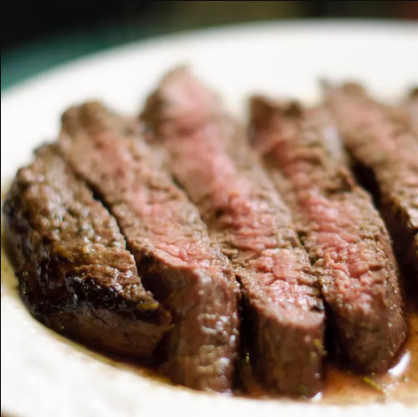

Filete de flanco toscano

Como Hacer Filete de flanco toscano
Solo he estado en la Toscana una vez, pero recuerdo un bistec a la parrilla que salía de un fuego de carbón, que luego se cortaba en rodajas y se salpicaba con aceite de oliva, limón y romero. Si bien estoy seguro de que mi versión está lejos de ser tradicional, es realmente sabrosa y el bistec de flanco muy fácil de usar es el corte perfecto.
Tiempo de preparacion:
20 minutos
Hora de Cocinar:
14 minutos
Tiempo Total:
4 h 40 minutos
Ingredientes De Filete de flanco toscano
- 4 mitades de pechuga de pollo deshuesadas y sin piel, cortadas en trozos de 1 pulgada
- ½ taza de romero fresco picado
- 6 dientes de ajo
- ⅓ taza de aceite de oliva
- ¼ taza de jugo de limón
- 1 cucharadita de pimienta negra molida gruesa
- ½ cucharadita de hojuelas de pimiento rojo
- ½ cucharadita de sal
- 1 bistec de flanco (1 1/2 libra) , sin exceso de grasa
- ⅓ taza de aceite de oliva virgen extra
- 3 cucharadas de jugo de limón
- 2 cucharaditas de ralladura de limón
- 1 cucharadita de romero fresco picado
- ⅛ cucharadita de hojuelas de pimiento rojo
- 1 pizca de sal
- 1 ramita de romero fresco
Como Hacer Filete de flanco toscano
- Combine 1/2 taza de romero fresco picado, ajo, 1/3 taza de aceite de oliva, 1/4 taza de jugo de limón, pimienta negra, 1/2 cucharadita de hojuelas de pimiento rojo y 1/2 cucharadita de sal en una licuadora o procesador de alimentos. Mezcle hasta que quede suave y reserve la marinada.
- Perfore el bistec con un tenedor de 20 a 30 veces. Colocar en una fuente para horno poco profunda. Vierta la marinada sobre el bistec y voltee para cubrir ambos lados. Cubra y refrigere de 4 a 8 horas.
- Combine 1/3 taza de aceite de oliva, 3 cucharadas de jugo de limón, ralladura de limón, 1 cucharadita de romero picado, 1/8 de cucharadita de hojuelas de pimiento rojo y una pizca de sal en un frasco. Cubra y agite el aderezo para combinar. Agitar de nuevo antes de usar.
- Precaliente una parrilla al aire libre a fuego medio-alto y engrase ligeramente la parrilla.
- Retire el bistec de la marinada; raspa cualquier trozo de marinada. Deseche la marinada usada. Sazone el bistec con sal y pimienta negra.
- Coloque el bistec en la parrilla precalentada y cocine hasta que esté dorado por fuera y rojo por dentro, aproximadamente de 6 a 8 minutos por lado. Coloque 2 cucharadas del aderezo de jugo de limón y aceite de oliva en un tazón pequeño. Use una ramita de romero para rociar el bistec mientras se cocina. Un termómetro de lectura instantánea insertado en el centro de un bistec debe indicar 125 grados F (52 grados C) para poco cocer.
- Retire el bistec a un plato y deje reposar unos 6 minutos antes de cortarlo. Cortar por la mitad a lo largo, luego en rebanadas de 1/4 de pulgada de grosor en un ángulo contra el grano. Rocíe con aderezo adicional.